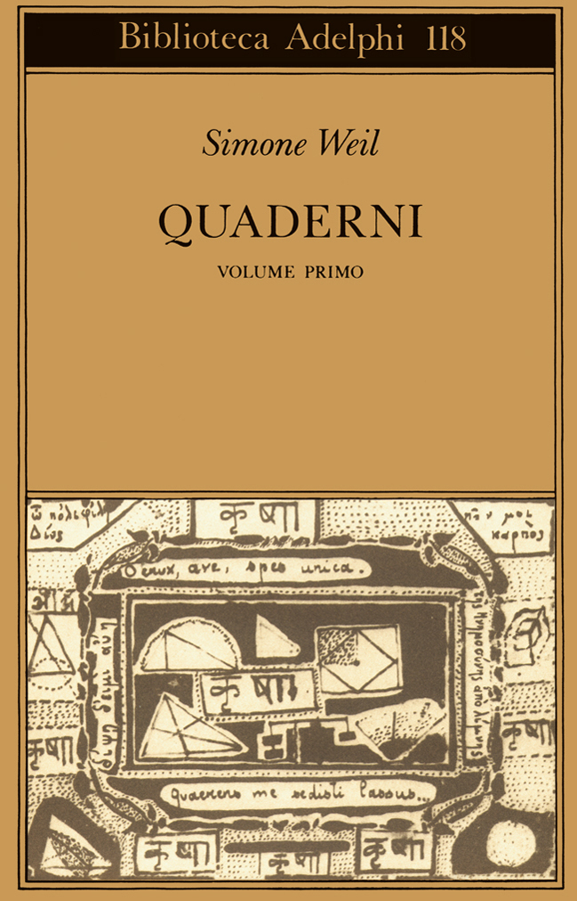
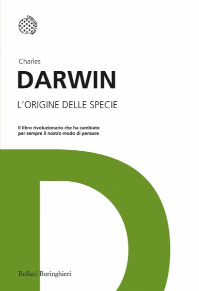
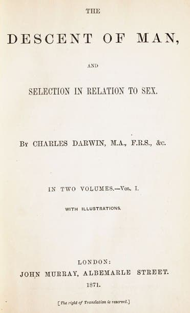
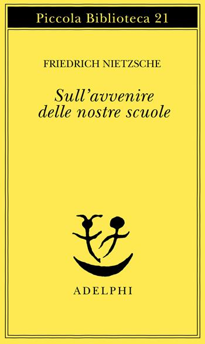

59:51 · 15 OPERE
Simone Weil e la condizione operaia.
Il filo del discorso
La conversazione presenta Simone Weil attraverso La condizione operaia, raccolta postuma di diario di fabbrica, lettere e saggi. Il relatore considera decisivo il rapporto fra pensiero ed esperienza: la scelta di lavorare in fabbrica nel 1934–1935 serve a conoscere dall’interno la fatica, la dipendenza e l’umiliazione, anziché parlare degli operai da una posizione protetta.
Leggi la sintesi completaRiduci la sintesi
I Quaderni sono richiamati come testimonianza dell’ampiezza di una ricerca che, a suo giudizio, non può essere esaurita da formule scolastiche o presentazioni rapide. Il confronto con Platone e gli aneddoti sui tiranni di Siracusa introduce il problema della coerenza fra ciò che si pensa e ciò che si fa. Nella lettura delle annotazioni e delle lettere emergono soprattutto gli effetti del lavoro estenuante sulla capacità di leggere, giudicare e formulare pensieri autonomi. Il relatore interpreta la rinuncia al pensiero come una risposta al dolore che può trasformarsi in sottomissione. Da qui passa alla diffidenza di Weil verso gli apparati politici e alla distanza fra i progetti di emancipazione e la conoscenza concreta delle condizioni di chi lavora. Le analogie con la vita contemporanea, la comunicazione di massa e il potere economico costituiscono la sua interpretazione polemica; il richiamo ad Améry non cancella le differenze storiche fra fabbrica e persecuzione nazista. La parte conclusiva segue le lettere sull’amore, la funzione dei libri e il dialogo con il direttore Victor Bernard. Il desiderio di un’organizzazione del lavoro più umana viene contrapposto alla massimizzazione del rendimento; l’appello agli operai di Rosières, destinato al giornale aziendale, rappresenta il tentativo di restituire parola e dignità a chi esegue gli ordini. Accanto a Weil compaiono Darwin, Eliot, Salvioli, Nietzsche e Tempi moderni di Chaplin, in digressioni sulla formazione e sulla storia industriale. Il filo che li unisce, nella proposta del relatore, è la difesa dell’attenzione verso gli altri e di un pensiero capace di resistere all’abitudine all’obbedienza.
I libri nel discorso

La condizione operaia
Note sul riferimento
Copertina: SE, Saggi e documenti del Novecento, 1 ottobre 2020, 320 pagine, traduzione di Franco Fortini, postfazione e note di Giancarlo Gaeta, ISBN 9788867235506. Copertina beige con immagine di una donna e un bambino. Non si attribuisce questa edizione al video.
Immagine autentica dell’opera, controllata visivamente; l’edizione di riferimento non è attribuita al filmato.
Titolo La condizione operaia esplicito; diario della fabbrica 1934–1935, lettere e saggi costituiscono il nucleo dell’intera conversazione.

Quaderni (Cahiers)
Note sul riferimento
Volume I: Quaderni: Copertina del solo volume I, Adelphi, Biblioteca Adelphi 118, 1982, cura di Giancarlo Gaeta, 403 pagine, ISBN 9788845904837. I Quaderni sono un’opera in più volumi; l’immagine non identifica il volume della citazione.
Copertina autentica ocra della Biblioteca Adelphi, con disegno tratto da un quaderno di Weil e indicazione volume primo. È illustrato un volume dell’opera, senza sostenere che il passo citato si trovi in esso. La localizzazione della frase su potere e rivalità resta aperta; il titolo pronunciato dal relatore viene distinto dalla verifica della singola citazione.
Titoli Cahiers e Quaderni, edizione italiana Adelphi, espliciti; nessun volume determinato.

L’origine delle specie
Note sul riferimento
Copertina: Bollati Boringhieri · I grandi pensatori
Darwin e prima edizione dell’Origine delle specie espliciti nella digressione sulle ricezioni ideologiche.

L’origine dell’uomo e la selezione sessuale (The Descent of Man, and Selection in Relation to Sex)
Note sul riferimento
Frontespizio inglese del volume I, John Murray 1871: Frontespizio autentico, non copertina esterna, del volume I della prima edizione inglese John Murray, Londra 1871, in due volumi. Immagine dalla Linda Hall Library. Non è una traduzione italiana e non si attribuisce un ISBN moderno al volume ottocentesco.
Il titolo completo e la dicitura Vol. I sono leggibili. Non copertina esterna e non l’intera opera in un singolo volume.
The Descent of Man esplicito; la resa letterale italiana esitante del relatore è ricondotta al titolo bibliografico.
La condizione operaia
Note sul riferimento
Copertina: SE, Saggi e documenti del Novecento, 1 ottobre 2020, 320 pagine, traduzione di Franco Fortini, postfazione e note di Giancarlo Gaeta, ISBN 9788867235506. Copertina beige con immagine di una donna e un bambino. Non si attribuisce questa edizione al video.
Immagine autentica dell’opera, controllata visivamente; l’edizione di riferimento non è attribuita al filmato.
Diario di fabbrica: registrazione del lavoro e attenzione alle vicende delle altre operaie.
La condizione operaia
Note sul riferimento
Copertina: SE, Saggi e documenti del Novecento, 1 ottobre 2020, 320 pagine, traduzione di Franco Fortini, postfazione e note di Giancarlo Gaeta, ISBN 9788867235506. Copertina beige con immagine di una donna e un bambino. Non si attribuisce questa edizione al video.
Immagine autentica dell’opera, controllata visivamente; l’edizione di riferimento non è attribuita al filmato.
Sezione delle lettere ad Albertine Thévenon esplicita; non creata una seconda edizione autonoma per le lettere.

Burnt Norton (Four Quartets, I)
Identificazione probabile
Note sul riferimento
Raccolta: Four Quartets: Faber · Four Quartets · edizione in brossura 56 pagine · ISBN 9780571068944. Copertina dell’intera raccolta; Burnt Norton è il primo dei quattro componimenti.
Copertina autentica dell’intera raccolta Four Quartets, contenente Burnt Norton; nessuna edizione autonoma del componimento viene simulata. Immagine distribuita da IBS, dati editoriali Faber e London Review Bookshop.
Eliot nominato e verso inglese sulla distrazione riconoscibile nella sezione III di Burnt Norton. Titolo del componimento non pronunciato.

Intellettuale a Auschwitz
Identificazione probabile
Note sul riferimento
Copertina: Bollati Boringhieri · Varianti · 2011 · traduzione di Enrico Ganni
Immagine autentica dell’opera, controllata visivamente; l’edizione di riferimento non è attribuita al filmato.
Jean Améry, nome corrotto dalla trascrizione automatica, e difficoltà dell’intellettuale ad Auschwitz. Titolo non pronunciato: collegamento probabile alla raccolta.
La condizione operaia
Note sul riferimento
Copertina: SE, Saggi e documenti del Novecento, 1 ottobre 2020, 320 pagine, traduzione di Franco Fortini, postfazione e note di Giancarlo Gaeta, ISBN 9788867235506. Copertina beige con immagine di una donna e un bambino. Non si attribuisce questa edizione al video.
Immagine autentica dell’opera, controllata visivamente; l’edizione di riferimento non è attribuita al filmato.
Lettura/parafrasi della riflessione sulla tentazione di rinunciare a pensare durante la vita operaia.
Il capitalismo antico. Storia dell’economia romana
Note sul riferimento
Copertina: Eutimia · La storia e le storie · 192 pagine · ISBN 9788831911207. Catalogo editore 2024 indica 2021; distribuzione libraria dal 17 febbraio 2022. Data editoriale e data commerciale distinte.
Copertina autentica ispezionata interamente; edizione di riferimento non attribuita al filmato.
Salvioli e Il capitalismo antico espliciti, nel contesto di una critica alla naturalizzazione del capitalismo.

Sull’avvenire delle nostre scuole
Note sul riferimento
Copertina: Adelphi, 1975
Nietzsche e saggio sul futuro delle nostre scuole espliciti; titolo normalizzato secondo la traduzione italiana.
Tempi moderni (Modern Times)
Note sul riferimento
Immagine ufficiale di Tempi moderni: Film del 1936 scritto, diretto, prodotto e interpretato da Charles Chaplin, con Paulette Goddard. Immagine ufficiale di catalogo.
Fotografia in bianco e nero fornita dal sito Chaplin: Charlot e un altro operaio fra gli ingranaggi. Non è una copertina di libro né una locandina con testo.
Tempi moderni e Chaplin espliciti; opera cinematografica, non volume cartaceo.
La condizione operaia
Note sul riferimento
Copertina: SE, Saggi e documenti del Novecento, 1 ottobre 2020, 320 pagine, traduzione di Franco Fortini, postfazione e note di Giancarlo Gaeta, ISBN 9788867235506. Copertina beige con immagine di una donna e un bambino. Non si attribuisce questa edizione al video.
Immagine autentica dell’opera, controllata visivamente; l’edizione di riferimento non è attribuita al filmato.
Passo delle lettere sull’amore e sulla maturità; pagina 132 riferita all’esemplare del relatore, non attribuita alla copertina di riferimento.
La condizione operaia
Note sul riferimento
Copertina: SE, Saggi e documenti del Novecento, 1 ottobre 2020, 320 pagine, traduzione di Franco Fortini, postfazione e note di Giancarlo Gaeta, ISBN 9788867235506. Copertina beige con immagine di una donna e un bambino. Non si attribuisce questa edizione al video.
Immagine autentica dell’opera, controllata visivamente; l’edizione di riferimento non è attribuita al filmato.
Passo a pagina 143 dell’esemplare del relatore sull’organizzazione di condizioni di lavoro più umane.
Un appello agli operai di R. (Rosières)
Note sul riferimento
Raccolta: La condizione operaia: SE · La condizione operaia · raccolta 2020 · traduzione Franco Fortini · ISBN 9788867235506. Copertina della raccolta che contiene l’appello, non di un’edizione autonoma.
Copertina già verificata della raccolta La condizione operaia, nuovamente ispezionata interamente per questo riferimento. Il testo breve Un appello agli operai di R. è distinto dal volume che lo contiene.
Appello agli operai esplicitamente raccomandato dopo il richiamo al giornale della fabbrica e a Victor Bernard. trascrizione automatica incerto sul toponimo, riscontrato bibliograficamente come Rosières.